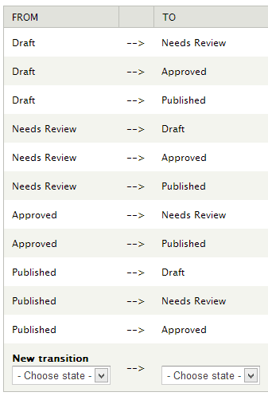
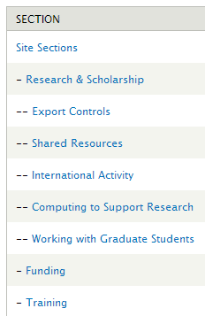
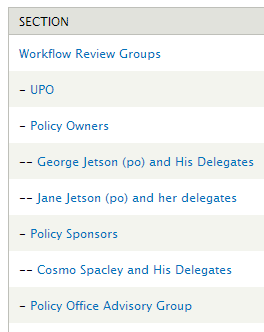
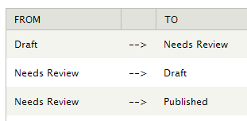
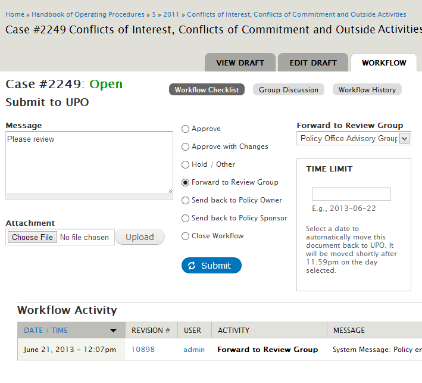
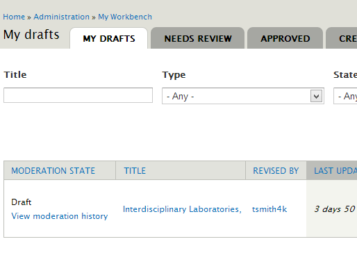
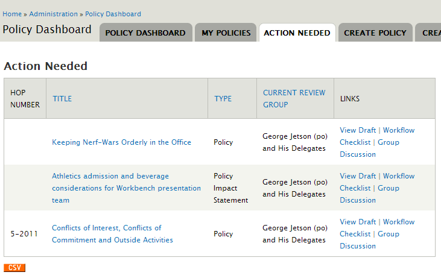

Policy of Truth*
Workbench (Moderation and Access) for basic and complex Workflows in Drupal
@beautyhammer & @tsmith512 of @fourkitchens
* with sincere apologies to Depeche Mode
In this Presentation
Workflow:
What is it? Who needs it?
Case Studies
A tale of two cities sites:
Stanford DoR &
UTexas UPO
Fostering understanding in complex projects by going client-side
Horseshoes & hand-grenades. Making "close" count:
Overcoming gaps in requirements & capabilities
Specific challenges and solutions
Workflow
What is workflow?
The movement of documents around an organization for purposes including sign-off, evaluation, performing activities in a process and co-writing.
Another more abstract take
Workflow comes down to just two ideas: that there is work to do, which a workflow sees as opaque units of behavior; and flow, which describes what work gets done when
Simple example: foodie blogger - iateitbeforeyoudid.com
Contributors & Editors
- Author creates/revises post about tripe bénh mì
- Notifies Editor to review
-
Editor may…
- Suggest edits:
“Please be less disdainful” - Make edits:
“Removing spiteful comments” - Publish:
“Against my better judgment”
- Suggest edits:
University Policy Office: Case Study
Who is UPO?
The University Policy Office at The University of Texas at Austin
A new Compliance Services office,
supported by the Policy Office Advisory Group,
working closely with President's Office and Legal Services.
What does UPO do?
- Create / maintain Handbook of Operating Procedures.
- Record history of changes, approvals, and effective dates.
- Guide policies through a complex review process engaging policy owners, sponsors, subject matter experts, and advisors.
- Provide historical policy materials
What did UPO need?
- Unify and expedite a disjointed review process under a new workflow model
- Reference policy revisions, related documentation, and effective dates
- Manage and track policy ownership and sponsorship
- Engage authors and moderators with minimal administrative overhead
A new model for UPO: the Command & Control Frisbee

Client Relationships for Complex Projects
Going client-side
Diving into business logic and domain knowledge
Distilling these findings for developers
Fostering understanding: making it real
Paper-based prototypes inspired us to modify and extend Workbench for this “routing” style process.
Personification using The Jetsons characters to illustrate roles, relationships, and permissions.
Fostering understanding: communication and demonstration
Constant communication with clients about boundaries of the system, actual and anticipated.
People think like they work; UPO preferred implementation over abstraction, complete features over drafts.
Choosing Drupal
Why Drupal?
- Robust content modeling
- Drupal as Framework
- University Drupal Community
- Cost effectiveness
Choosing Drupal as CMS → Drupal for workflow
Updated public site generated stakeholder “buy-in”
Experience in management of published content naturally extended to draft content.
Experience with Workbench led us to believe it was well suited to this task as well…
Enter the Workbench
What is Workbench?
Workbench provides overall improvements for managing content that Drupal does not provide out of the box.
What does Workbench do?
Moderation
Customizable revision and approval workflow with states between unpublished and published.
Access
Node access based on permissions and membership in a hierarchical taxonomy or menu system.
Workbench Moderation: Stanford DoR
Content Producer creates new content or proposes revisions.
Content Approver with domain knowledge revises and approves.
Content Admin with University expertise publishes.
Workbench Access: Stanford DoR
Admins have site-wide access. Approvers oversee relevant departments. Providers author in specific categories.
-
Site-Wide Access
-
Policy Documents
- Research Policy
- Property Policy
-
Research & Scholarship
- Funding
- Training
- Administration
-
Policy Documents
Workbench solution: Stanford DoR
Research policy specialist creates a new policy.
Policy manager revises and approves.
DoR Comms Director finalizes and publishes.
Workbench works for DoR. What about UPO?
- Moderation and storage of revisions.
- Access to “Review Groups” seemed doable?
- Unlike DoR, the UPO Frisbee is not linear…
Horseshoes & Hand-grenades for Complexity
“Close” counts in Drupal, too.
Workbench did not do what we needed. But we were half-way there.
Leveraging other tools and APIs including CTOOLS, panels, contexts, taxonomy, node permissions, views, menus, and theming filled the gaps.
Challenges & Solutions
Highly variable workflow
Overview
The creation and editing process varies widely, case-by-case.
Workbench Moderation allows limitless node states BUT:
DoR Transitions:
- Transition management
- Transitions do not control access → twice the maintenance
- Moderation history damaged if revisions are deleted
- Transition steps (approvals) require node editing access
Workbench Access provides taxonomy-based access BUT:
DoR Access Sections:
- Traditional Access models are based on static relationships to nodes (categories, business areas, etc.)
- Recommended permission settings are over permissive
Workbench on its side: “Moderating” with Access
Traditional Workbench
A flow of actions
taken by users
Workbench on its side
A flow of users
who take actions
“Moderating” with Access
UPO Access Groups
- Taxonomy-based Workbench Access scheme mirrored UPO constituents
- Role permissions + taxonomy traversal → capabilities are as-needed
- Few, simple Moderation states: Draft, In Review, Published
Using Moderation states to trigger, not govern, the workflow
UPO Moderation Transitions
- New nodes and edits on pre-existing nodes start in Draft state
- Authors trigger review process by transitioning to In Review.
- Using the state change hook (API) we triggered the creation of our “helper” workflow node.
Controlling Workflow on its side: Workflow Checklist nodes
UPO: Workflow Checklist
{kind=link}
- Helper nodes tied to documents in review to sidecar moderation capabilities
- Recorded starting and ending VIDs
- Comments, taxonomy, fields, and FAPI created a richer moderation experience and history.
Solution
The creation and editing process varies widely, case-by-case.
Rotate Workbench: moderate with Access, use helper nodes, use state transitions permissions to manage workflow triggers not direct workflow.
Better Dashboard
Overview
The system and the policy review process are brand new. How will users know what to do?
Existing dashboards unhelpful: workflow awareness
Standard “My Workbench” Dashboard
{kind=link}
Conceptual Divergence
- Core-provided: not Workbench aware
- WB-provided:
- Passive, not instructive
- State- not action-based
- No role-based context
Existing dashboards unhelpful: specific needs
Curate Owner and Sponsor Portfolios of published policies
Relate and expose supporting nodes of policies in review
Integrate related management features to provide context for admins
Creating a site specific Policy Dashboard
Policy Dashboard: Action Needed tab
{kind=link}
A Frisbee-friendly Policy Dashboard
- Guides users through new process and software
- Responds to users’ role(s)
- Surfaces policies’ actions needed and role/group assignment
- Generates portfolios for owners and sponsors via policies’ term references to these groups
- Provides quick access to auxiliary tools: policy revision history, GA stats, CSV exports, public comments
Solution
The system and the policy review process is brand new How will users know what to do?
Provided new Policy Dashboard that honors workflow context/multiple roles, guides users, provides portfolio management.
Complex Permission Requirements
Overview
Needed easily managed permissions with restricted editing rights, stakeholder access through draft process, and delegation.
Moderation: recommended configuration didn't work here
Recommended permission settings for Moderation posed management, security, and business challenges:
- Suited to linear and hierarchical flow/access scheme.
- Moderators and publishers all given "edit any content" - no Review only role
- Node moderation messages are visible to all.
- Users with multiple roles receive too many permissions.
Access: Other issues
- Administration of access can be opaque - needs to be simple
- Need to honor portfolios and allow delegation within them
- Taxonomy traversal prevented access by owners/sponsors when node was out of their review group (taxonomy term).
Alternative Solutions for Permissions
- Did not grant "edit any content"
- Custom Ctools access plugins to interpret taxonomy traversal:
- Augmented workbench node access restrictions
- Allowed non-editors to view unpublished content
- Used node traversal aware permissions for a variety of needs
- Taxonomy references on policy nodes provided access exceptions for stakeholders (owners and sponsors).
* Workbench Moderation 7.x-2.x has switched to a Ctools based permission handling.
Alternative Solutions for Permissions
Simplified permission management:
- Proliferation of taxonomy terms, not roles
- Emphasized concrete management over abstraction
- Used term references to Workbench taxonomy to accommodate overarching access exceptions for stakeholders
Solution
Needed easily managed permissions with restricted editing rights, stakeholder access through draft process, and delegation.
Custom permissions and node access augmentation, managed via terms instead of roles. Matching references on nodes permit exceptions.
Policy of Truth – Thank You for Joining us
“Workflow” is a generic business term for an editorial process.
Stanford DoR and Texas UPO needed a way to manage this process within their CMS.
Novel ideas and ”going client-side”
help to tackle challenges.